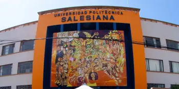

Universidad Politecnica Salesiana
Carrera: Negocios Digitales
Período: 2023 - Actualidad
Estado: Cursando 6to semestre
En la universidad he desarrollado habilidades en programación, desarrollo web, realidad aumentada y gestión de proyectos tecnológicos.
